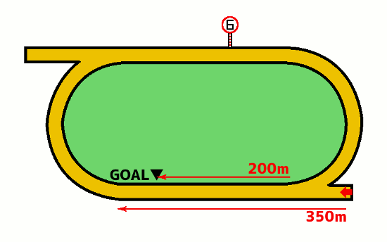

無料メルマガで連日の無料予想と秋G1の極秘情報もGETしよう!!
無料メルマガ登録フォーム
佐賀競馬場1400m
特徴と傾向
最終更新日：
YouTubeで登録者数6万人のうまめし競馬チャンネルを運営しているうまめし君です！
佐賀1400メートルの特徴や傾向について調べてみました。枠順データや脚質データ・人気データ・騎手データ・血統データ・などを随時追加更新し、常に最新のデータを参考にコース分析をしています。
もくじ
競馬場特徴の一覧に戻る
札幌 函館 福島 新潟 東京 中山 中京 京都 阪神 小倉 地方 海外
無料メルマガで連日の無料予想と秋G1の極秘情報もGETしよう!!
無料メルマガ登録フォーム
佐賀1400m 重賞・主要レース
- 九州クラウン
- たんぽぽ賞
- 飛燕賞
- フォーマルハウト賞
- ウインターチャンピオン
- 佐賀オータムスプリント
- ネクストスター佐賀
- 九州ジュニアチャンピオン
- サマーチャンピオン
- 霧島賞
- 吉野ヶ里記念
- 佐賀ユースカップ
- SAGAリベンジャーズ過去データ・傾向
無料メルマガで連日の無料予想と秋G1の極秘情報もGETしよう!!
無料メルマガ登録フォーム
佐賀1400m 枠順・脚質の傾向
佐賀ダ1400mコースでの枠順と脚質別の成績を見ていきましょう。
1枠の成績は（1着235回・2着229回・3着237回・着外1859回）で、勝率は9パーセント・連対率は18パーセント・複勝率は27パーセントとなっています。
脚質別の馬券に絡むパーセンテージは逃げ：49％・先行：36％・差し：19％・追込：6％となっております。
2枠の成績は（1着251回・2着250回・3着263回・着外1796回）で、勝率は9パーセント・連対率は19パーセント・複勝率は29パーセントとなっています。 逃げ警戒
脚質別の馬券に絡むパーセンテージは逃げ：50％・先行：37％・差し：23％・追込：9％となっております。
3枠の成績は（1着219回・2着254回・3着249回・着外1838回）で、勝率は8パーセント・連対率は18パーセント・複勝率は28パーセントとなっています。 逃げ警戒
脚質別の馬券に絡むパーセンテージは逃げ：52％・先行：35％・差し：21％・追込：12％となっております。
4枠の成績は（1着266回・2着241回・3着249回・着外1804回）で、勝率は10パーセント・連対率は19パーセント・複勝率は29パーセントとなっています。 逃げ警戒
脚質別の馬券に絡むパーセンテージは逃げ：54％・先行：37％・差し：20％・追込：10％となっております。
5枠の成績は（1着295回・2着270回・3着284回・着外2268回）で、勝率は9パーセント・連対率は18パーセント・複勝率は27パーセントとなっています。 逃げ警戒
脚質別の馬券に絡むパーセンテージは逃げ：50％・先行：36％・差し：22％・追込：9％となっております。
6枠の成績は（1着369回・2着378回・3着358回・着外2771回）で、勝率は9パーセント・連対率は19パーセント・複勝率は28パーセントとなっています。 逃げ警戒
脚質別の馬券に絡むパーセンテージは逃げ：54％・先行：38％・差し：21％・追込：9％となっております。
7枠の成績は（1着457回・2着450回・3着445回・着外3213回）で、勝率は10パーセント・連対率は19パーセント・複勝率は29パーセントとなっています。 逃げ警戒
脚質別の馬券に絡むパーセンテージは逃げ：56％・先行：41％・差し：21％・追込：7％となっております。
8枠の成績は（1着461回・2着485回・3着467回・着外3459回）で、勝率は9パーセント・連対率は19パーセント・複勝率は29パーセントとなっています。 逃げ警戒
脚質別の馬券に絡むパーセンテージは逃げ：55％・先行：37％・差し：18％・追込：7％となっております。
下の表は枠を考慮しない脚質成績
| 逃げ | 先行 | 差し | 追込 | |
|---|---|---|---|---|
| 勝 率 | 26% | 12% | 5% | 1% |
| 連対率 | 42% | 26% | 11% | 3% |
| 複勝率 | 53% | 37% | 20% | 8% |
佐賀1400m コース分析
佐賀競馬は他の地方競馬と同様に基本的にダート1400mの競走が多いのですが、1周1100メートルの小さなトラックになっています。

スタートは観客席から見て右側、4コーナー付近にあるポケットからで、一度ホームストレッチを通過して馬場を1周するコースレイアウトになっています。
スタート地点から最初のコーナーまでの距離は350mで、わりと長めの先行争いになります。そして、佐賀競馬では内ラチ沿いの砂を意図的に深くしてあり…

普通はそこを避けるようにスペースを空けて馬群が形成されます。インの人気馬が多少スタートでモタついてしまった場合には外の馬が被せ気味に走り、わざと「砂の深いところ」に追いやる場合もあります。
そういう時にはインの馬は砂が深いのを承知の上でインから行くか、もしくはポジションを下げてでも砂の深いところを避けるかを選択するわけですが、いずれにしても不利な状況になります。
じゃあ外枠の方が有利なのか？と言われるとそうとも言い切れず、やはり外枠は外枠でどうしても馬群の外側を走らざるを得なくなる事が多いので、コーナーで距離ロスが発生しやすいのは事実です。
無料メルマガで連日の無料予想と秋G1の極秘情報もGETしよう!!
無料メルマガ登録フォーム
佐賀1400m 人気傾向
佐賀ダ1400mコースでの人気別の成績を見ていきましょう。
1番人気の成績は（1着1175回・2着521回・3着281回・着外576回）で、勝率は46パーセント・連対率は66パーセント・複勝率77パーセントとなっています。
脚質別の馬券に絡むパーセンテージは逃げ：88％・先行：78％・差し：68％・追込：50％となっております。
2番人気の成績は（1着554回・2着611回・3着401回・着外985回）で、勝率は21パーセント・連対率は45パーセント・複勝率61パーセントとなっています。
脚質別の馬券に絡むパーセンテージは逃げ：71％・先行：62％・差し：54％・追込：44％となっております。
3番人気の成績は（1着288回・2着467回・3着423回・着外1374回）で、勝率は11パーセント・連対率は29パーセント・複勝率46パーセントとなっています。
脚質別の馬券に絡むパーセンテージは逃げ：57％・先行：49％・差し：39％・追込：29％となっております。
4番人気の成績は（1着188回・2着322回・3着391回・着外1655回）で、勝率は7パーセント・連対率は19パーセント・複勝率35パーセントとなっています。
脚質別の馬券に絡むパーセンテージは逃げ：47％・先行：37％・差し：32％・追込：16％となっております。
5番人気の成績は（1着126回・2着226回・3着317回・着外1879回）で、勝率は4パーセント・連対率は13パーセント・複勝率26パーセントとなっています。
脚質別の馬券に絡むパーセンテージは逃げ：37％・先行：30％・差し：20％・追込：18％となっております。
6番人気の成績は（1着89回・2着156回・3着277回・着外2026回）で、勝率は3パーセント・連対率は9パーセント・複勝率20パーセントとなっています。
脚質別の馬券に絡むパーセンテージは逃げ：30％・先行：24％・差し：16％・追込：13％となっております。
7番人気の成績は（1着58回・2着113回・3着171回・着外2197回）で、勝率は2パーセント・連対率は6パーセント・複勝率13パーセントとなっています。
脚質別の馬券に絡むパーセンテージは逃げ：26％・先行：14％・差し：11％・追込：8％となっております。
8番人気の成績は（1着38回・2着71回・3着136回・着外2241回）で、勝率は1パーセント・連対率は4パーセント・複勝率9パーセントとなっています。
脚質別の馬券に絡むパーセンテージは逃げ：17％・先行：12％・差し：8％・追込：5％となっております。
無料メルマガで連日の無料予想と秋G1の極秘情報もGETしよう!!
無料メルマガ登録フォーム
佐賀1400m 騎手傾向
佐賀ダ1400コースでの騎手成績を詳細に見ていきましょう。
飛田愛騎手の成績は293-223-190-973で、1~4番人気での成績は271-193-144-460で、5番人気以下の人気薄での騎乗成績は22-30-46-513でした。
山口勲騎手の成績は275-211-174-586で、1~4番人気での成績は265-195-154-362で、5番人気以下の人気薄での騎乗成績は10-16-20-224でした。
石川慎騎手の成績は232-214-189-817で、1~4番人気での成績は211-176-135-354で、5番人気以下の人気薄での騎乗成績は21-38-54-463でした。
山田貴騎手の成績は198-165-116-815で、1~4番人気での成績は182-133-83-311で、5番人気以下の人気薄での騎乗成績は16-32-33-504でした。
出水拓騎手の成績は145-170-154-1219で、1~4番人気での成績は124-127-84-281で、5番人気以下の人気薄での騎乗成績は21-43-70-938でした。
金山昇騎手の成績は143-135-149-1061で、1~4番人気での成績は120-93-87-261で、5番人気以下の人気薄での騎乗成績は23-42-62-800でした。
川島拓騎手の成績は120-138-151-1232で、1~4番人気での成績は100-94-76-233で、5番人気以下の人気薄での騎乗成績は20-44-75-999でした。
竹吉徹騎手の成績は119-143-148-1010で、1~4番人気での成績は96-96-84-296で、5番人気以下の人気薄での騎乗成績は23-47-64-714でした。
山下裕騎手の成績は114-120-117-990で、1~4番人気での成績は93-94-68-231で、5番人気以下の人気薄での騎乗成績は21-26-49-759でした。
倉富隆騎手の成績は101-75-63-463で、1~4番人気での成績は84-65-39-129で、5番人気以下の人気薄での騎乗成績は17-10-24-334でした。
加茂飛騎手の成績は98-114-132-1133で、1~4番人気での成績は86-81-68-215で、5番人気以下の人気薄での騎乗成績は12-33-64-918でした。
田中直騎手の成績は95-115-136-1054で、1~4番人気での成績は78-83-63-183で、5番人気以下の人気薄での騎乗成績は17-32-73-871でした。
石川倭騎手の成績は86-68-44-145で、1~4番人気での成績は80-63-37-85で、5番人気以下の人気薄での騎乗成績は6-5-7-60でした。
田中純騎手の成績は80-96-115-802で、1~4番人気での成績は66-67-57-180で、5番人気以下の人気薄での騎乗成績は14-29-58-622でした。
中山蓮騎手の成績は58-69-120-1026で、1~4番人気での成績は41-36-47-148で、5番人気以下の人気薄での騎乗成績は17-33-73-878でした。
長田進騎手の成績は54-76-93-884で、1~4番人気での成績は41-45-38-129で、5番人気以下の人気薄での騎乗成績は13-31-55-755でした。
青海大騎手の成績は46-74-78-1030で、1~4番人気での成績は29-38-26-107で、5番人気以下の人気薄での騎乗成績は17-36-52-923でした。
村松翔騎手の成績は42-54-49-527で、1~4番人気での成績は33-33-28-73で、5番人気以下の人気薄での騎乗成績は9-21-21-454でした。
小松丈騎手の成績は42-56-61-783で、1~4番人気での成績は26-31-25-113で、5番人気以下の人気薄での騎乗成績は16-25-36-670でした。
合林海騎手の成績は20-25-30-507で、1~4番人気での成績は15-14-13-58で、5番人気以下の人気薄での騎乗成績は5-11-17-449でした。
小林凌騎手の成績は13-18-16-256で、1~4番人気での成績は10-12-9-24で、5番人気以下の人気薄での騎乗成績は3-6-7-232でした。
吉本隆騎手の成績は12-15-21-196で、1~4番人気での成績は8-8-8-30で、5番人気以下の人気薄での騎乗成績は4-7-13-166でした。
及川烈騎手の成績は10-10-4-132で、1~4番人気での成績は10-7-3-21で、5番人気以下の人気薄での騎乗成績は0-3-1-111でした。
宮内勇騎手の成績は8-4-10-35で、1~4番人気での成績は8-4-6-9で、5番人気以下の人気薄での騎乗成績は0-0-4-26でした。
松井伸騎手の成績は7-11-15-113で、1~4番人気での成績は6-9-8-22で、5番人気以下の人気薄での騎乗成績は1-2-7-91でした。
山本咲騎手の成績は5-5-5-12で、1~4番人気での成績は4-2-4-5で、5番人気以下の人気薄での騎乗成績は1-3-1-7でした。
渡邊竜騎手の成績は4-3-3-3で、1~4番人気での成績は4-3-3-0で、5番人気以下の人気薄での騎乗成績は0-0-0-3でした。
下原理騎手の成績は4-0-3-5で、1~4番人気での成績は3-0-2-3で、5番人気以下の人気薄での騎乗成績は1-0-1-2でした。
和田譲騎手の成績は3-0-0-2で、1~4番人気での成績は3-0-0-1で、5番人気以下の人気薄での騎乗成績は0-0-0-1でした。
他の騎手のデータも見るには【ここ】を押してね
笹川翼騎手の成績は3-3-1-4で、1~4番人気での成績は3-3-0-3で、5番人気以下の人気薄での騎乗成績は0-0-1-1でした。
吉原寛騎手の成績は3-1-1-6で、1~4番人気での成績は3-1-1-3で、5番人気以下の人気薄での騎乗成績は0-0-0-3でした。
野畑凌騎手の成績は2-0-2-6で、1~4番人気での成績は2-0-2-3で、5番人気以下の人気薄での騎乗成績は0-0-0-3でした。
筒井勇騎手の成績は2-0-0-3で、1~4番人気での成績は2-0-0-1で、5番人気以下の人気薄での騎乗成績は0-0-0-2でした。
多田誠騎手の成績は2-0-0-1で、1~4番人気での成績は2-0-0-1で、5番人気以下の人気薄での騎乗成績は0-0-0-0でした。
小沢大騎手の成績は2-0-0-0で、1~4番人気での成績は1-0-0-0で、5番人気以下の人気薄での騎乗成績は1-0-0-0でした。
小崎綾騎手の成績は2-0-0-0で、1~4番人気での成績は2-0-0-0で、5番人気以下の人気薄での騎乗成績は0-0-0-0でした。
山本聡騎手の成績は2-2-0-7で、1~4番人気での成績は2-2-0-3で、5番人気以下の人気薄での騎乗成績は0-0-0-4でした。
吉村智騎手の成績は2-1-1-8で、1~4番人気での成績は2-1-1-6で、5番人気以下の人気薄での騎乗成績は0-0-0-2でした。
丸山元騎手の成績は2-1-0-4で、1~4番人気での成績は2-1-0-2で、5番人気以下の人気薄での騎乗成績は0-0-0-2でした。
永島ま騎手の成績は2-1-0-4で、1~4番人気での成績は2-1-0-3で、5番人気以下の人気薄での騎乗成績は0-0-0-1でした。
永森大騎手の成績は2-0-0-0で、1~4番人気での成績は2-0-0-0で、5番人気以下の人気薄での騎乗成績は0-0-0-0でした。
櫻井光騎手の成績は1-0-0-2で、1~4番人気での成績は0-0-0-1で、5番人気以下の人気薄での騎乗成績は1-0-0-1でした。
木之葵騎手の成績は1-0-1-4で、1~4番人気での成績は1-0-0-1で、5番人気以下の人気薄での騎乗成績は0-0-1-3でした。
服部茂騎手の成績は1-0-0-1で、1~4番人気での成績は1-0-0-0で、5番人気以下の人気薄での騎乗成績は0-0-0-1でした。
土田真騎手の成績は1-0-0-2で、1~4番人気での成績は0-0-0-1で、5番人気以下の人気薄での騎乗成績は1-0-0-1でした。
渡瀬和騎手の成績は1-0-0-4で、1~4番人気での成績は0-0-0-1で、5番人気以下の人気薄での騎乗成績は1-0-0-3でした。
田野豊騎手の成績は1-0-0-3で、1~4番人気での成績は0-0-0-1で、5番人気以下の人気薄での騎乗成績は1-0-0-2でした。
長尾翼騎手の成績は1-4-4-37で、1~4番人気での成績は1-2-2-5で、5番人気以下の人気薄での騎乗成績は0-2-2-32でした。
丹内祐騎手の成績は1-3-0-2で、1~4番人気での成績は1-3-0-2で、5番人気以下の人気薄での騎乗成績は0-0-0-0でした。
大畑慧騎手の成績は1-0-0-1で、1~4番人気での成績は1-0-0-0で、5番人気以下の人気薄での騎乗成績は0-0-0-1でした。
大山真騎手の成績は1-2-2-12で、1~4番人気での成績は1-2-2-5で、5番人気以下の人気薄での騎乗成績は0-0-0-7でした。
川端海騎手の成績は1-0-0-7で、1~4番人気での成績は1-0-0-2で、5番人気以下の人気薄での騎乗成績は0-0-0-5でした。
赤岡修騎手の成績は1-3-1-4で、1~4番人気での成績は1-2-1-2で、5番人気以下の人気薄での騎乗成績は0-1-0-2でした。
石橋脩騎手の成績は1-0-0-0で、1~4番人気での成績は1-0-0-0で、5番人気以下の人気薄での騎乗成績は0-0-0-0でした。
西森将騎手の成績は1-3-7-112で、1~4番人気での成績は1-3-1-7で、5番人気以下の人気薄での騎乗成績は0-0-6-105でした。
松本一騎手の成績は1-0-0-1で、1~4番人気での成績は1-0-0-0で、5番人気以下の人気薄での騎乗成績は0-0-0-1でした。
秋山稔騎手の成績は1-0-0-4で、1~4番人気での成績は1-0-0-2で、5番人気以下の人気薄での騎乗成績は0-0-0-2でした。
鮫島駿騎手の成績は1-0-1-2で、1~4番人気での成績は1-0-1-2で、5番人気以下の人気薄での騎乗成績は0-0-0-0でした。
今村聖騎手の成績は1-2-0-5で、1~4番人気での成績は1-1-0-1で、5番人気以下の人気薄での騎乗成績は0-1-0-4でした。
高橋愛騎手の成績は1-0-1-9で、1~4番人気での成績は0-0-1-2で、5番人気以下の人気薄での騎乗成績は1-0-0-7でした。
幸英明騎手の成績は1-0-1-1で、1~4番人気での成績は1-0-1-1で、5番人気以下の人気薄での騎乗成績は0-0-0-0でした。
桑村真騎手の成績は1-1-0-2で、1~4番人気での成績は1-1-0-0で、5番人気以下の人気薄での騎乗成績は0-0-0-2でした。
魚住謙騎手の成績は1-2-2-21で、1~4番人気での成績は1-1-0-6で、5番人気以下の人気薄での騎乗成績は0-1-2-15でした。
岩田望騎手の成績は1-0-0-0で、1~4番人気での成績は1-0-0-0で、5番人気以下の人気薄での騎乗成績は0-0-0-0でした。
関本玲騎手の成績は1-0-0-3で、1~4番人気での成績は1-0-0-0で、5番人気以下の人気薄での騎乗成績は0-0-0-3でした。
河原菜騎手の成績は1-1-1-3で、1~4番人気での成績は1-1-1-1で、5番人気以下の人気薄での騎乗成績は0-0-0-2でした。
阿部龍騎手の成績は1-0-2-4で、1~4番人気での成績は1-0-0-1で、5番人気以下の人気薄での騎乗成績は0-0-2-3でした。
Ｍデム騎手の成績は1-0-0-0で、1~4番人気での成績は1-0-0-0で、5番人気以下の人気薄での騎乗成績は0-0-0-0でした。
濱尚美騎手の成績は0-0-0-3で、1~4番人気での成績は0-0-0-2で、5番人気以下の人気薄での騎乗成績は0-0-0-1でした。
澤田龍騎手の成績は0-0-2-8で、1~4番人気での成績は0-0-1-2で、5番人気以下の人気薄での騎乗成績は0-0-1-6でした。
廣瀬航騎手の成績は0-1-2-2で、1~4番人気での成績は0-1-1-1で、5番人気以下の人気薄での騎乗成績は0-0-1-1でした。
團野大騎手の成績は0-0-0-2で、1~4番人気での成績は0-0-0-1で、5番人気以下の人気薄での騎乗成績は0-0-0-1でした。
國分優騎手の成績は0-0-0-1で、1~4番人気での成績は0-0-0-0で、5番人気以下の人気薄での騎乗成績は0-0-0-1でした。
鷲頭虎騎手の成績は0-0-1-1で、1~4番人気での成績は0-0-1-0で、5番人気以下の人気薄での騎乗成績は0-0-0-1でした。
鈴木祐騎手の成績は0-0-0-1で、1~4番人気での成績は0-0-0-0で、5番人気以下の人気薄での騎乗成績は0-0-0-1でした。
落合玄騎手の成績は0-1-0-8で、1~4番人気での成績は0-1-0-3で、5番人気以下の人気薄での騎乗成績は0-0-0-5でした。
明星晴騎手の成績は0-0-0-2で、1~4番人気での成績は0-0-0-0で、5番人気以下の人気薄での騎乗成績は0-0-0-2でした。
武 豊騎手の成績は0-1-0-1で、1~4番人気での成績は0-1-0-1で、5番人気以下の人気薄での騎乗成績は0-0-0-0でした。
富田暁騎手の成績は0-1-0-0で、1~4番人気での成績は0-1-0-0で、5番人気以下の人気薄での騎乗成績は0-0-0-0でした。
藤本現騎手の成績は0-0-1-3で、1~4番人気での成績は0-0-1-1で、5番人気以下の人気薄での騎乗成績は0-0-0-2でした。
藤田菜騎手の成績は0-1-0-3で、1~4番人気での成績は0-1-0-2で、5番人気以下の人気薄での騎乗成績は0-0-0-1でした。
藤懸貴騎手の成績は0-0-0-1で、1~4番人気での成績は0-0-0-1で、5番人気以下の人気薄での騎乗成績は0-0-0-0でした。
田中健騎手の成績は0-0-0-1で、1~4番人気での成績は0-0-0-1で、5番人気以下の人気薄での騎乗成績は0-0-0-0でした。
田口貫騎手の成績は0-0-1-2で、1~4番人気での成績は0-0-1-2で、5番人気以下の人気薄での騎乗成績は0-0-0-0でした。
的場文騎手の成績は0-0-1-5で、1~4番人気での成績は0-0-1-0で、5番人気以下の人気薄での騎乗成績は0-0-0-5でした。
塚本征騎手の成績は0-0-1-3で、1~4番人気での成績は0-0-1-2で、5番人気以下の人気薄での騎乗成績は0-0-0-1でした。
長浜鴻騎手の成績は0-0-0-2で、1~4番人気での成績は0-0-0-1で、5番人気以下の人気薄での騎乗成績は0-0-0-1でした。
長谷駿騎手の成績は0-0-1-9で、1~4番人気での成績は0-0-0-2で、5番人気以下の人気薄での騎乗成績は0-0-1-7でした。
中島良騎手の成績は0-0-1-2で、1~4番人気での成績は0-0-0-0で、5番人気以下の人気薄での騎乗成績は0-0-1-2でした。
中田貴騎手の成績は0-0-0-5で、1~4番人気での成績は0-0-0-0で、5番人気以下の人気薄での騎乗成績は0-0-0-5でした。
池田敦騎手の成績は0-0-1-0で、1~4番人気での成績は0-0-0-0で、5番人気以下の人気薄での騎乗成績は0-0-1-0でした。
大畑雅騎手の成績は0-0-0-1で、1~4番人気での成績は0-0-0-0で、5番人気以下の人気薄での騎乗成績は0-0-0-1でした。
大坪慎騎手の成績は0-0-0-1で、1~4番人気での成績は0-0-0-0で、5番人気以下の人気薄での騎乗成績は0-0-0-1でした。
大久友騎手の成績は0-0-0-2で、1~4番人気での成績は0-0-0-1で、5番人気以下の人気薄での騎乗成績は0-0-0-1でした。
黛弘人騎手の成績は0-0-1-0で、1~4番人気での成績は0-0-0-0で、5番人気以下の人気薄での騎乗成績は0-0-1-0でした。
太宰啓騎手の成績は0-0-0-1で、1~4番人気での成績は0-0-0-1で、5番人気以下の人気薄での騎乗成績は0-0-0-0でした。
村上忍騎手の成績は0-0-0-1で、1~4番人気での成績は0-0-0-0で、5番人気以下の人気薄での騎乗成績は0-0-0-1でした。
浅野皓騎手の成績は0-0-0-2で、1~4番人気での成績は0-0-0-0で、5番人気以下の人気薄での騎乗成績は0-0-0-2でした。
泉谷楓騎手の成績は0-0-0-2で、1~4番人気での成績は0-0-0-1で、5番人気以下の人気薄での騎乗成績は0-0-0-1でした。
川又賢騎手の成績は0-0-1-0で、1~4番人気での成績は0-0-0-0で、5番人気以下の人気薄での騎乗成績は0-0-1-0でした。
川田将騎手の成績は0-1-0-0で、1~4番人気での成績は0-1-0-0で、5番人気以下の人気薄での騎乗成績は0-0-0-0でした。
川須栄騎手の成績は0-0-0-1で、1~4番人気での成績は0-0-0-1で、5番人気以下の人気薄での騎乗成績は0-0-0-0でした。
川原正騎手の成績は0-0-1-2で、1~4番人気での成績は0-0-0-1で、5番人気以下の人気薄での騎乗成績は0-0-1-1でした。
石堂響騎手の成績は0-0-1-6で、1~4番人気での成績は0-0-1-0で、5番人気以下の人気薄での騎乗成績は0-0-0-6でした。
石田拓騎手の成績は0-0-0-1で、1~4番人気での成績は0-0-0-0で、5番人気以下の人気薄での騎乗成績は0-0-0-1でした。
石神道騎手の成績は0-0-1-2で、1~4番人気での成績は0-0-0-0で、5番人気以下の人気薄での騎乗成績は0-0-1-2でした。
菅原辰騎手の成績は0-0-0-4で、1~4番人気での成績は0-0-0-0で、5番人気以下の人気薄での騎乗成績は0-0-0-4でした。
杉浦健騎手の成績は0-0-0-3で、1~4番人気での成績は0-0-0-0で、5番人気以下の人気薄での騎乗成績は0-0-0-3でした。
水沼元騎手の成績は0-0-0-2で、1~4番人気での成績は0-0-0-1で、5番人気以下の人気薄での騎乗成績は0-0-0-1でした。
神尾香騎手の成績は0-0-2-1で、1~4番人気での成績は0-0-1-0で、5番人気以下の人気薄での騎乗成績は0-0-1-1でした。
真島大騎手の成績は0-0-0-1で、1~4番人気での成績は0-0-0-0で、5番人気以下の人気薄での騎乗成績は0-0-0-1でした。
深澤杏騎手の成績は0-0-0-2で、1~4番人気での成績は0-0-0-1で、5番人気以下の人気薄での騎乗成績は0-0-0-1でした。
森裕太騎手の成績は0-0-0-1で、1~4番人気での成績は0-0-0-1で、5番人気以下の人気薄での騎乗成績は0-0-0-0でした。
新庄海騎手の成績は0-0-1-4で、1~4番人気での成績は0-0-0-0で、5番人気以下の人気薄での騎乗成績は0-0-1-4でした。
城野慈騎手の成績は0-0-0-3で、1~4番人気での成績は0-0-0-1で、5番人気以下の人気薄での騎乗成績は0-0-0-2でした。
城戸義騎手の成績は0-0-0-5で、1~4番人気での成績は0-0-0-3で、5番人気以下の人気薄での騎乗成績は0-0-0-2でした。
松木大騎手の成績は0-0-0-7で、1~4番人気での成績は0-0-0-1で、5番人気以下の人気薄での騎乗成績は0-0-0-6でした。
松若風騎手の成績は0-0-0-1で、1~4番人気での成績は0-0-0-1で、5番人気以下の人気薄での騎乗成績は0-0-0-0でした。
小牧太騎手の成績は0-2-2-2で、1~4番人気での成績は0-2-0-0で、5番人気以下の人気薄での騎乗成績は0-0-2-2でした。
酒井学騎手の成績は0-0-1-0で、1~4番人気での成績は0-0-1-0で、5番人気以下の人気薄での騎乗成績は0-0-0-0でした。
柴田裕騎手の成績は0-0-0-4で、1~4番人気での成績は0-0-0-1で、5番人気以下の人気薄での騎乗成績は0-0-0-3でした。
山本太騎手の成績は0-0-0-3で、1~4番人気での成績は0-0-0-0で、5番人気以下の人気薄での騎乗成績は0-0-0-3でした。
山本政騎手の成績は0-0-0-1で、1~4番人気での成績は0-0-0-0で、5番人気以下の人気薄での騎乗成績は0-0-0-1でした。
山崎雅騎手の成績は0-0-0-2で、1~4番人気での成績は0-0-0-1で、5番人気以下の人気薄での騎乗成績は0-0-0-1でした。
笹田知騎手の成績は0-2-0-1で、1~4番人気での成績は0-2-0-1で、5番人気以下の人気薄での騎乗成績は0-0-0-0でした。
坂井瑠騎手の成績は0-0-0-2で、1~4番人気での成績は0-0-0-1で、5番人気以下の人気薄での騎乗成績は0-0-0-1でした。
坂井瑛騎手の成績は0-1-0-0で、1~4番人気での成績は0-0-0-0で、5番人気以下の人気薄での騎乗成績は0-1-0-0でした。
佐々大騎手の成績は0-0-0-1で、1~4番人気での成績は0-0-0-0で、5番人気以下の人気薄での騎乗成績は0-0-0-1でした。
佐々世騎手の成績は0-3-0-3で、1~4番人気での成績は0-2-0-2で、5番人気以下の人気薄での騎乗成績は0-1-0-1でした。
佐々志騎手の成績は0-0-0-1で、1~4番人気での成績は0-0-0-1で、5番人気以下の人気薄での騎乗成績は0-0-0-0でした。
高倉稜騎手の成績は0-0-0-1で、1~4番人気での成績は0-0-0-1で、5番人気以下の人気薄での騎乗成績は0-0-0-0でした。
高杉吏騎手の成績は0-1-0-1で、1~4番人気での成績は0-1-0-0で、5番人気以下の人気薄での騎乗成績は0-0-0-1でした。
高橋悠騎手の成績は0-0-0-1で、1~4番人気での成績は0-0-0-0で、5番人気以下の人気薄での騎乗成績は0-0-0-1でした。
御神訓騎手の成績は0-0-0-1で、1~4番人気での成績は0-0-0-0で、5番人気以下の人気薄での騎乗成績は0-0-0-1でした。
戸崎圭騎手の成績は0-0-0-1で、1~4番人気での成績は0-0-0-1で、5番人気以下の人気薄での騎乗成績は0-0-0-0でした。
古川奈騎手の成績は0-0-0-4で、1~4番人気での成績は0-0-0-1で、5番人気以下の人気薄での騎乗成績は0-0-0-3でした。
兼子千騎手の成績は0-0-0-2で、1~4番人気での成績は0-0-0-0で、5番人気以下の人気薄での騎乗成績は0-0-0-2でした。
橋木太騎手の成績は0-2-1-2で、1~4番人気での成績は0-1-0-1で、5番人気以下の人気薄での騎乗成績は0-1-1-1でした。
宮下瞳騎手の成績は0-1-0-5で、1~4番人気での成績は0-1-0-0で、5番人気以下の人気薄での騎乗成績は0-0-0-5でした。
吉留孝騎手の成績は0-0-0-2で、1~4番人気での成績は0-0-0-1で、5番人気以下の人気薄での騎乗成績は0-0-0-1でした。
吉村誠騎手の成績は0-0-2-0で、1~4番人気での成績は0-0-1-0で、5番人気以下の人気薄での騎乗成績は0-0-1-0でした。
岩橋勇騎手の成績は0-0-0-2で、1~4番人気での成績は0-0-0-1で、5番人気以下の人気薄での騎乗成績は0-0-0-1でした。
丸野勝騎手の成績は0-0-0-5で、1~4番人気での成績は0-0-0-0で、5番人気以下の人気薄での騎乗成績は0-0-0-5でした。
鴨宮祥騎手の成績は0-0-0-3で、1~4番人気での成績は0-0-0-1で、5番人気以下の人気薄での騎乗成績は0-0-0-2でした。
角田大騎手の成績は0-0-1-3で、1~4番人気での成績は0-0-1-0で、5番人気以下の人気薄での騎乗成績は0-0-0-3でした。
加藤翔騎手の成績は0-0-0-1で、1~4番人気での成績は0-0-0-0で、5番人気以下の人気薄での騎乗成績は0-0-0-1でした。
加藤祥騎手の成績は0-0-1-0で、1~4番人気での成績は0-0-1-0で、5番人気以下の人気薄での騎乗成績は0-0-0-0でした。
荻野琢騎手の成績は0-0-0-1で、1~4番人気での成績は0-0-0-0で、5番人気以下の人気薄での騎乗成績は0-0-0-1でした。
岡村健騎手の成績は0-0-0-3で、1~4番人気での成績は0-0-0-2で、5番人気以下の人気薄での騎乗成績は0-0-0-1でした。
横山武騎手の成績は0-1-0-0で、1~4番人気での成績は0-1-0-0で、5番人気以下の人気薄での騎乗成績は0-0-0-0でした。
塩津璃騎手の成績は0-0-0-4で、1~4番人気での成績は0-0-0-0で、5番人気以下の人気薄での騎乗成績は0-0-0-4でした。
永井孝騎手の成績は0-1-2-0で、1~4番人気での成績は0-1-0-0で、5番人気以下の人気薄での騎乗成績は0-0-2-0でした。
井上幹騎手の成績は0-0-0-4で、1~4番人気での成績は0-0-0-0で、5番人気以下の人気薄での騎乗成績は0-0-0-4でした。
井上瑛騎手の成績は0-0-2-0で、1~4番人気での成績は0-0-2-0で、5番人気以下の人気薄での騎乗成績は0-0-0-0でした。
阿部基騎手の成績は0-0-0-2で、1~4番人気での成績は0-0-0-0で、5番人気以下の人気薄での騎乗成績は0-0-0-2でした。
無料メルマガで連日の無料予想と秋G1の極秘情報もGETしよう!!
無料メルマガ登録フォーム
佐賀1400m 血統傾向
どの種牡馬の産駒がどの程度馬券に絡んでいるのか、種牡馬ごとに馬券に絡んだ回数をカウントしたのが以下の表です。血統の系統別に馬名を色分けしています。
■ヘイルトゥリーズン系
■サンデーサイレンス系
■ミスプロ系・キングマンボ系
■ノーザンダンサー系
■エーピーインディ系
| 種牡馬名 | 勝利回数 |
|---|---|
| マジェスティックウォリアー | 64 |
| ホッコータルマエ | 49 |
| ダノンレジェンド | 48 |
| マクフィ | 41 |
| パイロ | 39 |
| ストロングリターン | 39 |
| ドレフォン | 36 |
| モーリス | 35 |
| ダンカーク | 35 |
| ゴールドシップ | 33 |
| ヘニーヒューズ | 32 |
| ビーチパトロール | 32 |
| ブリックスアンドモルタル | 31 |
| コパノリッキー | 31 |
| ルーラーシップ | 30 |
| リオンディーズ | 29 |
| キンシャサノキセキ | 29 |
| ビッグアーサー | 28 |
| マインドユアビスケッツ | 27 |
| ケイムホーム | 27 |
下位種牡馬も見る
| 種牡馬名 | 勝利回数 |
|---|---|
| マジェスティックウォリアー | 64 |
| ホッコータルマエ | 49 |
| ダノンレジェンド | 48 |
| マクフィ | 41 |
| パイロ | 39 |
| ストロングリターン | 39 |
| ドレフォン | 36 |
| モーリス | 35 |
| ダンカーク | 35 |
| ゴールドシップ | 33 |
| ヘニーヒューズ | 32 |
| ビーチパトロール | 32 |
| ブリックスアンドモルタル | 31 |
| コパノリッキー | 31 |
| ルーラーシップ | 30 |
| リオンディーズ | 29 |
| キンシャサノキセキ | 29 |
| ビッグアーサー | 28 |
| マインドユアビスケッツ | 27 |
| ケイムホーム | 27 |
| アメリカンペイトリオット | 27 |
| ヴィクトワールピサ | 26 |
| ロードカナロア | 26 |
| ベストウォーリア | 26 |
| トゥザワールド | 26 |
| サトノクラウン | 26 |
| オルフェーヴル | 26 |
| エスポワールシチー | 25 |
| フリオーソ | 24 |
| ダイワメジャー | 24 |
| シャンハイボビー | 24 |
| サンダースノー | 24 |
| キズナ | 23 |
| エピファネイア | 23 |
| ロージズインメイ | 22 |
| リアルスティール | 21 |
| カジノドライヴ | 21 |
| アドマイヤムーン | 21 |
| ベーカバド | 20 |
| ファインニードル | 20 |
| シニスターミニスター | 20 |
| ミッキーアイル | 19 |
| バゴ | 19 |
| デクラレーションオブウォー | 19 |
| スクリーンヒーロー | 19 |
| ワールドエース | 18 |
| ブラックタイド | 18 |
| ディスクリートキャット | 18 |
| スマートファルコン | 18 |
| ジョーカプチーノ | 18 |
| ジャスタウェイ | 18 |
| シルバーステート | 18 |
| エイシンフラッシュ | 18 |
| リーチザクラウン | 17 |
| タリスマニック | 17 |
| イスラボニータ | 17 |
| モーニン | 16 |
| ハーツクライ | 16 |
| ニューイヤーズデイ | 16 |
| サトノアラジン | 16 |
| アジアエクスプレス | 16 |
| メイショウボーラー | 15 |
| ドゥラメンテ | 15 |
| ダノンバラード | 15 |
| ロゴタイプ | 14 |
| バトルプラン | 14 |
| エイシンヒカリ | 14 |
| ホークビル | 13 |
| バンブーエール | 13 |
| ジャングルポケット | 13 |
| クリエイター２ | 13 |
| カレンブラックヒル | 13 |
| ヴァンセンヌ | 12 |
| タワーオブロンドン | 12 |
| スワーヴリチャード | 12 |
| シュヴァルグラン | 12 |
| ゴールドアクター | 12 |
| キタサンブラック | 12 |
| レインボーライン | 11 |
| ラニ | 11 |
| モンテロッソ | 11 |
| トランセンド | 11 |
| アイルハヴアナザー | 11 |
| ロードバリオス | 10 |
| レイデオロ | 10 |
| ラブリーデイ | 10 |
| エスケンデレヤ | 10 |
| ルヴァンスレーヴ | 9 |
| ノーブルミッション | 9 |
| ディープインパクト | 9 |
| スクワートルスクワート | 9 |
| シンボリクリスエス | 9 |
| シビルウォー | 9 |
| アレスバローズ | 9 |
| マツリダゴッホ | 8 |
| フェノーメノ | 8 |
| スズカコーズウェイ | 8 |
| ザファクター | 8 |
| リアルインパクト | 7 |
| モズアスコット | 7 |
| ミッキーグローリー | 7 |
| ドリームバレンチノ | 7 |
| トーセンラー | 7 |
| トーセンジョーダン | 7 |
| シゲルカガ | 7 |
| ゴールドドリーム | 7 |
| オーシャンブルー | 7 |
| アグネスデジタル | 7 |
| Shamardal | 7 |
| レーヴミストラル | 6 |
| トビーズコーナー | 6 |
| ディープブリランテ | 6 |
| テイエムジンソク | 6 |
| スピルバーグ | 6 |
| キングヘイロー | 6 |
| ウルトラカイザー | 6 |
| Territories | 6 |
| Street Boss | 6 |
| American Pharoah | 6 |
| ミッキーロケット | 5 |
| ミスターメロディ | 5 |
| ベルシャザール | 5 |
| ヘニーハウンド | 5 |
| パドトロワ | 5 |
| ディーマジェスティ | 5 |
| ゼンノロブロイ | 5 |
| スターリングローズ | 5 |
| サトノアレス | 5 |
| サクラオリオン | 5 |
| サウスヴィグラス | 5 |
| ゴールデンバローズ | 5 |
| ギンザグリングラス | 5 |
| カリフォルニアクローム | 5 |
| アルアイン | 5 |
| アポロケンタッキー | 5 |
| アポロキングダム | 5 |
| Justin Phillip | 5 |
| ローズキングダム | 4 |
| レッドファルクス | 4 |
| レガーロ | 4 |
| フォーウィールドライブ | 4 |
| ハービンジャー | 4 |
| ノヴェリスト | 4 |
| ドリームジャーニー | 4 |
| ダノンシャンティ | 4 |
| タニノギムレット | 4 |
| ケイアイドウソジン | 4 |
| クロフネ | 4 |
| クラウンレガーロ | 4 |
| キングカメハメハ | 4 |
| エンパイアメーカー | 4 |
| エイシンアポロン | 4 |
| アニマルキングダム | 4 |
| Quality Road | 4 |
| ヴィットリオドーロ | 3 |
| ワンダーアキュート | 3 |
| ロジャーバローズ | 3 |
| ローエングリン | 3 |
| ペルーサ | 3 |
| フサイチセブン | 3 |
| ニシケンモノノフ | 3 |
| ディープスカイ | 3 |
| ストーミングホーム | 3 |
| ショウナンバッハ | 3 |
| グレーターロンドン | 3 |
| グランプリボス | 3 |
| カンパニー | 3 |
| エピカリス | 3 |
| エーシントップ | 3 |
| インカンテーション | 3 |
| アンライバルド | 3 |
| New Approach | 3 |
| Nathaniel | 3 |
| Golden Horn | 3 |
| ヴァーミリアン | 2 |
| メイショウサムソン | 2 |
| マンハッタンカフェ | 2 |
| ポアゾンブラック | 2 |
| ヘンリーバローズ | 2 |
| フレンチデピュティ | 2 |
| ハクサンムーン | 2 |
| ネオユニヴァース | 2 |
| ナムラタイタン | 2 |
| トゥザグローリー | 2 |
| テイエムオペラオー | 2 |
| チェリークラウン | 2 |
| タイムパラドックス | 2 |
| スノードラゴン | 2 |
| サムライハート | 2 |
| サトノダイヤモンド | 2 |
| コパノリチャード | 2 |
| グラスワンダー | 2 |
| クレスコグランド | 2 |
| クリーンエコロジー | 2 |
| ガルボ | 2 |
| カイロス | 2 |
| エポカドーロ | 2 |
| エーシンジーライン | 2 |
| アドマイヤコジーン | 2 |
| アドマイヤオーラ | 2 |
| Speightstown | 2 |
| Raven's Pass | 2 |
| Iffraaj | 2 |
| Garswood | 2 |
| Free Eagle | 2 |
| Exceed And Excel | 2 |
| Constitution | 2 |
| Carpe Diem | 2 |
| ロジユニヴァース | 1 |
| ローレルゲレイロ | 1 |
| ロードアルティマ | 1 |
| リッカバクシンオ | 1 |
| ミュゼスルタン | 1 |
| ミッキースワロー | 1 |
| マスクゾロ | 1 |
| プリサイスエンド | 1 |
| ブルドッグボス | 1 |
| ブラックタキシード | 1 |
| バンデ | 1 |
| ハードスパン | 1 |
| ネロ | 1 |
| ナカヤマフェスタ | 1 |
| トーセンレーヴ | 1 |
| ダブルスター | 1 |
| ダノンシャーク | 1 |
| タイセイレジェンド | 1 |
| タイキシャトル | 1 |
| タートルボウル | 1 |
| スペシャルウィーク | 1 |
| スズカマンボ | 1 |
| スウェプトオーヴァーボード | 1 |
| シルポート | 1 |
| ショウナンカンプ | 1 |
| サウンドスカイ | 1 |
| ゴールドヘイロー | 1 |
| ゴールドアリュール | 1 |
| ゴールデンマンデラ | 1 |
| ケープブランコ | 1 |
| キングズベスト | 1 |
| キタサンミカヅキ | 1 |
| カネヒキリ | 1 |
| オンファイア | 1 |
| オウケンブルースリ | 1 |
| エーシンモアオバー | 1 |
| ウインバリアシオン | 1 |
| アルデバラン２ | 1 |
| アドミラブル | 1 |
| アサクサキングス | 1 |
| アグニシャイン | 1 |
| Savabeel | 1 |
| Rio de La Plata | 1 |
| Preferment | 1 |
| Medaglia d'Oro | 1 |
| Kitten's Joy | 1 |
| Invincible Spirit | 1 |
| Frankel | 1 |
| Flatter | 1 |
| Fast Company | 1 |
| Distorted Humor | 1 |
| Curlin | 1 |
| Air Force Blue | 1 |
無料メルマガで連日の無料予想と秋G1の極秘情報もGETしよう!!
無料メルマガ登録フォーム
佐賀1400m 重・不良馬場
| 種牡馬名 | 勝利回数 |
|---|---|
| マジェスティックウォリアー | 33 |
| マクフィ | 28 |
| ホッコータルマエ | 28 |
| ダノンレジェンド | 28 |
| ダンカーク | 26 |
| ゴールドシップ | 25 |
| ストロングリターン | 24 |
| モーリス | 23 |
| ヴィクトワールピサ | 20 |
| オルフェーヴル | 19 |
| ヘニーヒューズ | 18 |
| ダイワメジャー | 18 |
| リオンディーズ | 17 |
| ドレフォン | 17 |
| ルーラーシップ | 16 |
| パイロ | 16 |
| キズナ | 16 |
| エスポワールシチー | 16 |
| ロージズインメイ | 15 |
| ビッグアーサー | 15 |
| シャンハイボビー | 15 |
| コパノリッキー | 15 |
| エピファネイア | 15 |
| アメリカンペイトリオット | 15 |
| ベーカバド | 14 |
| フリオーソ | 14 |
| ビーチパトロール | 14 |
| トゥザワールド | 14 |
| キンシャサノキセキ | 14 |
| カジノドライヴ | 14 |
| ロードカナロア | 13 |
| マインドユアビスケッツ | 13 |
| ジャスタウェイ | 13 |
| ケイムホーム | 13 |
| ベストウォーリア | 12 |
| ディスクリートキャット | 12 |
| サンダースノー | 12 |
| ミッキーアイル | 11 |
| ブリックスアンドモルタル | 11 |
| ブラックタイド | 11 |
| ドゥラメンテ | 11 |
| リーチザクラウン | 10 |
| ファインニードル | 10 |
| サトノクラウン | 10 |
| クリエイター２ | 10 |
| エイシンフラッシュ | 10 |
| アドマイヤムーン | 10 |
| ワールドエース | 9 |
| バンブーエール | 9 |
| バゴ | 9 |
| ニューイヤーズデイ | 9 |
| タリスマニック | 9 |
| スクリーンヒーロー | 9 |
| シュヴァルグラン | 9 |
| サトノアラジン | 9 |
| キタサンブラック | 9 |
| アイルハヴアナザー | 9 |
| リアルスティール | 8 |
| ラブリーデイ | 8 |
| モンテロッソ | 8 |
| ハーツクライ | 8 |
| デクラレーションオブウォー | 8 |
| イスラボニータ | 8 |
| ヴァンセンヌ | 7 |
| ラニ | 7 |
| モーニン | 7 |
| ホークビル | 7 |
| フェノーメノ | 7 |
| ディープインパクト | 7 |
| ジョーカプチーノ | 7 |
| ジャングルポケット | 7 |
| シルバーステート | 7 |
| シニスターミニスター | 7 |
| カレンブラックヒル | 7 |
| エイシンヒカリ | 7 |
| Shamardal | 7 |
| ロゴタイプ | 6 |
| レインボーライン | 6 |
| メイショウボーラー | 6 |
| ディープブリランテ | 6 |
| ダノンバラード | 6 |
| タワーオブロンドン | 6 |
| スマートファルコン | 6 |
| シビルウォー | 6 |
| ザファクター | 6 |
| ゴールドアクター | 6 |
| エスケンデレヤ | 6 |
| アジアエクスプレス | 6 |
| ノーブルミッション | 5 |
| トーセンジョーダン | 5 |
| スターリングローズ | 5 |
| スズカコーズウェイ | 5 |
| スクワートルスクワート | 5 |
| サクラオリオン | 5 |
| オーシャンブルー | 5 |
| アグネスデジタル | 5 |
| Territories | 5 |
| American Pharoah | 5 |
| ロードバリオス | 4 |
| レーヴミストラル | 4 |
| ルヴァンスレーヴ | 4 |
| ミッキーロケット | 4 |
| マツリダゴッホ | 4 |
| トランセンド | 4 |
| トーセンラー | 4 |
| テイエムジンソク | 4 |
| スワーヴリチャード | 4 |
| エンパイアメーカー | 4 |
| アレスバローズ | 4 |
| アニマルキングダム | 4 |
| ヴィットリオドーロ | 3 |
| ワンダーアキュート | 3 |
| ローズキングダム | 3 |
| レガーロ | 3 |
| レイデオロ | 3 |
| リアルインパクト | 3 |
| モズアスコット | 3 |
| ミッキーグローリー | 3 |
| ベルシャザール | 3 |
| ヘニーハウンド | 3 |
| フサイチセブン | 3 |
| バトルプラン | 3 |
| ノヴェリスト | 3 |
| トビーズコーナー | 3 |
| ディーマジェスティ | 3 |
| ディープスカイ | 3 |
| ダノンシャンティ | 3 |
| ゼンノロブロイ | 3 |
| サトノアレス | 3 |
| サウスヴィグラス | 3 |
| ゴールデンバローズ | 3 |
| ケイアイドウソジン | 3 |
| クロフネ | 3 |
| クラウンレガーロ | 3 |
| カリフォルニアクローム | 3 |
| アポロケンタッキー | 3 |
| Nathaniel | 3 |
| ヴァーミリアン | 2 |
| ローエングリン | 2 |
| ポアゾンブラック | 2 |
| パドトロワ | 2 |
| ハクサンムーン | 2 |
| ハービンジャー | 2 |
| ドリームバレンチノ | 2 |
| ドリームジャーニー | 2 |
| トゥザグローリー | 2 |
| タイムパラドックス | 2 |
| スピルバーグ | 2 |
| シンボリクリスエス | 2 |
| シゲルカガ | 2 |
| サトノダイヤモンド | 2 |
| ゴールドドリーム | 2 |
| グランプリボス | 2 |
| クリーンエコロジー | 2 |
| ギンザグリングラス | 2 |
| キングヘイロー | 2 |
| キングカメハメハ | 2 |
| ガルボ | 2 |
| カンパニー | 2 |
| エポカドーロ | 2 |
| エイシンアポロン | 2 |
| ウルトラカイザー | 2 |
| インカンテーション | 2 |
| アルアイン | 2 |
| アポロキングダム | 2 |
| Street Boss | 2 |
| Speightstown | 2 |
| Justin Phillip | 2 |
| Garswood | 2 |
| Constitution | 2 |
| Carpe Diem | 2 |
| ロジユニヴァース | 1 |
| ロジャーバローズ | 1 |
| ローレルゲレイロ | 1 |
| ロードアルティマ | 1 |
| レッドファルクス | 1 |
| ミッキースワロー | 1 |
| ミスターメロディ | 1 |
| ペルーサ | 1 |
| フレンチデピュティ | 1 |
| フォーウィールドライブ | 1 |
| バンデ | 1 |
| ハードスパン | 1 |
| ネロ | 1 |
| ネオユニヴァース | 1 |
| ニシケンモノノフ | 1 |
| ナムラタイタン | 1 |
| ナカヤマフェスタ | 1 |
| テイエムオペラオー | 1 |
| タニノギムレット | 1 |
| スノードラゴン | 1 |
| ストーミングホーム | 1 |
| スズカマンボ | 1 |
| スウェプトオーヴァーボード | 1 |
| ショウナンバッハ | 1 |
| ショウナンカンプ | 1 |
| ゴールドアリュール | 1 |
| ゴールデンマンデラ | 1 |
| コパノリチャード | 1 |
| ケープブランコ | 1 |
| グレーターロンドン | 1 |
| クレスコグランド | 1 |
| キングズベスト | 1 |
| オンファイア | 1 |
| オウケンブルースリ | 1 |
| エピカリス | 1 |
| エーシンモアオバー | 1 |
| エーシントップ | 1 |
| エーシンジーライン | 1 |
| ウインバリアシオン | 1 |
| アンライバルド | 1 |
| アルデバラン２ | 1 |
| アドミラブル | 1 |
| アドマイヤコジーン | 1 |
| アドマイヤオーラ | 1 |
| Savabeel | 1 |
| Rio de La Plata | 1 |
| Raven's Pass | 1 |
| Quality Road | 1 |
| Preferment | 1 |
| New Approach | 1 |
| Kitten's Joy | 1 |
| Iffraaj | 1 |
| Golden Horn | 1 |
| Free Eagle | 1 |
| Flatter | 1 |
| Fast Company | 1 |
無料メルマガで連日の無料予想と秋G1の極秘情報もGETしよう!!
無料メルマガ登録フォーム
佐賀1400m コースタイム
※当ページへのリンクや、論文・SNSでの紹介などは大歓迎です。単なるコピペパクリなど引用の法的要件を満たさない記事泥棒的な転載は禁止です。
関連記事
新着レース
- 麦秋ステークス 過去10年データ傾向・予想
- 安田記念 過去10年データ傾向・予想
- 早池峰賞 過去10年データ傾向・予想
- 水無月ステークス 過去10年データ傾向・予想
- 佐賀王冠賞 過去10年データ傾向・予想
- グランシャリオ門別スプリント 過去10年データ傾向・予想
- 東海優駿 過去10年データ傾向・予想【旧東海ダービー】
- 若潮スプリント 過去10年データ傾向・予想
- 六甲盃 過去10年データ傾向・予想
- 日本ダービー 過去10年データ傾向・予想【東京優駿】
- 目黒記念 過去10年データ傾向・予想
- 東北優駿 過去10年データ傾向・予想
- 百万石賞 過去10年データ傾向・予想
- 九州優駿栄城賞 過去10年データ傾向・予想
- 白百合ステークス 過去10年データ傾向・予想
- 安土城ステークス 過去10年データ傾向・予想
- アハルテケステークス 過去10年データ傾向・予想
- 鳳雛ステークス 過去10年データ傾向・予想
- 葵ステークス 過去10年データ傾向・予想
- ヒダカソウカップ 過去10年データ傾向・予想